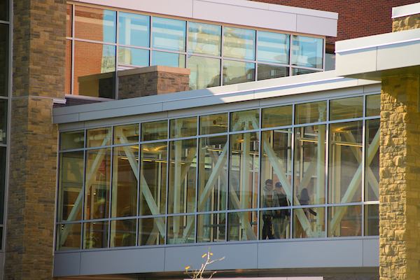

Geospatial · Housing
Vermont Zoning Atlas
A statewide zoning visualization covering all 237 Vermont towns — making complex zoning regulations accessible to planners, advocates, and the public to identify barriers to affordable housing and climate resilience.